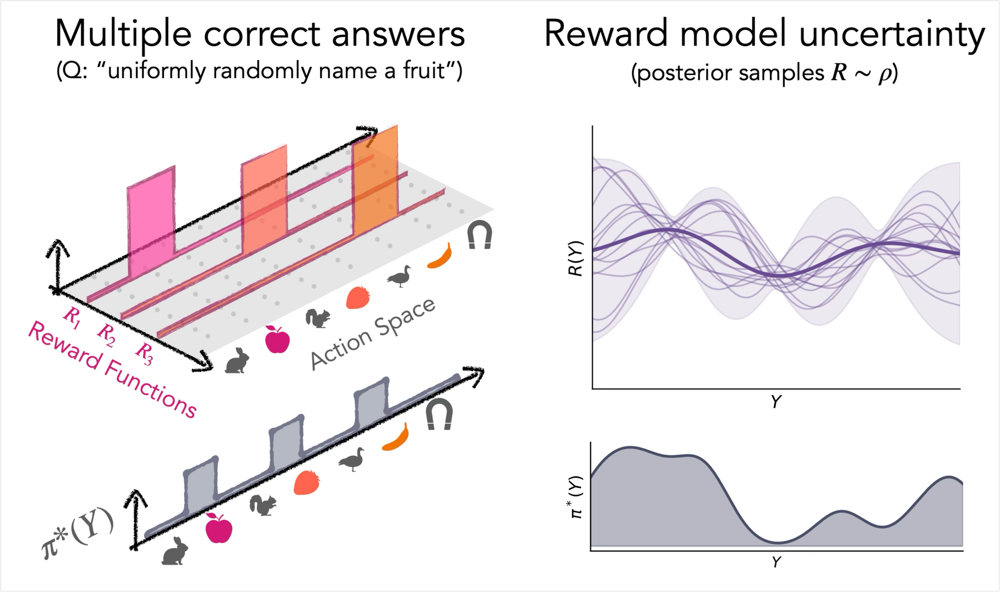
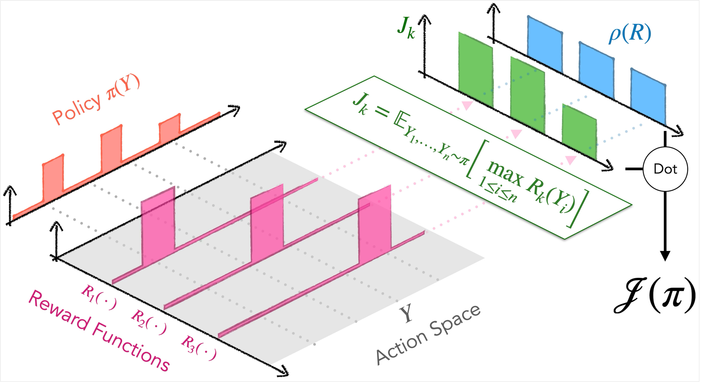
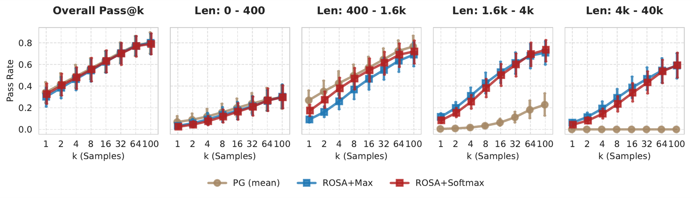
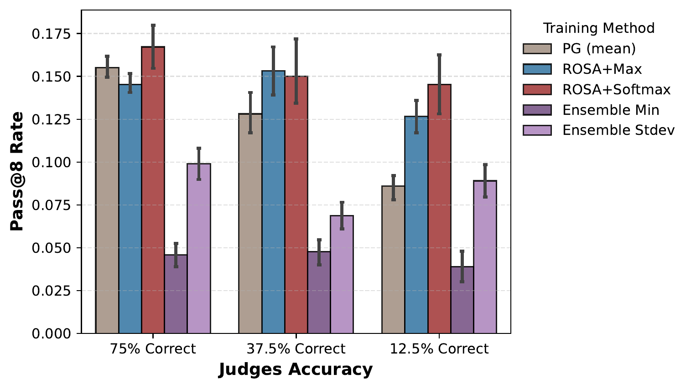
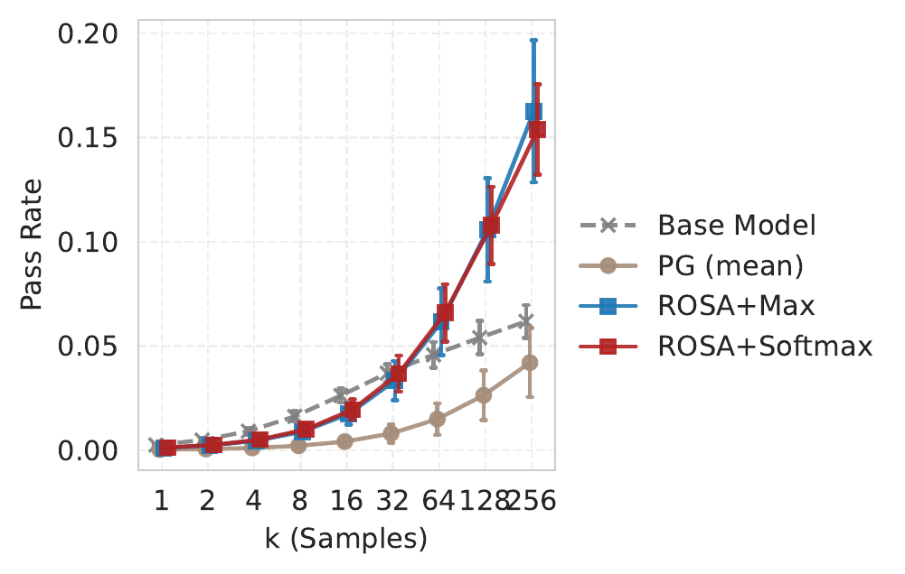

We should not ask for policy diversity directly. Instead, we should characterize our uncertainty in the reward function, and train a policy that calibrates its action probabilities to the reward uncertainty.
The ability to generate diverse outputs is an important and desirable property of modern generative models. In post-training, the loss of diversity—entropy collapse—causes the model to concentrate its probability mass and be confidently wrong. Beyond reliability, diversity is fundamental to generative creativity, enabling models to propose novel ideas, designs, and solutions. More fundamentally, diversity enables discovery: models can search vast spaces of possible molecules, materials, and hypotheses, helping humanity discover fundamentally new knowledge.
But what do we really mean when we “want diversity”?
There are certainly examples where diversity is undesirable. For example, if a policy wishes to get a high score on Atari Breakout, it may wish to play in a deterministic, reliable way. In fact, reinforcement learning theory says that (in MDPs) there is always a deterministic policy whose expected reward is at least as high as that of any stochastic policy.
In these scenarios, diversity is a desirable property only when we have epistemic uncertainty about the optimal action:
In other words, when there are multiple plausible reward functions consistent with the information we have, maintaining diversity allows a generative model to hedge across these possibilities, rather than prematurely committing to a single one. This is the central thesis behind the design of our new post-training objective:
Diversity is a rational response to uncertainty about the true reward function.
Rather than explicitly trying to engineer diversity, we should better characterize our uncertainty in the reward function, then design an objective that correctly calibrates the action probabilities to that uncertainty.

We design an objective that treats reward function uncertainty as a first-class citizen. We will see how this naturally leads to action diversity along the dimensions where we are uncertain.
We refer to this as the Randomized Objective, Set Actions (ROSA) criterion. It is defined by an expectation over a distribution of reward functions ($R \sim \rho$) and a (multi)set of $n$ actions sampled i.i.d. from the policy $\pi$, $(Y_1, \ldots, Y_n)$. At the core of the objective is a nonlinear set aggregation function over the rewards of the $n$ actions. We discuss a general family of set functions in later sections; for now, we focus on the simple choice of the $\max$ set function:

The following interactive example shows ROSA in action and compares it with a popular alternative: policy gradient (PG) with entropy regularization. There are four reward functions ($R_1, \ldots, R_4$), and it is possible to configure how much they agree by dragging the reward functions around in the figure. Both policies are optimized live with gradient descent!
N.B. Choosing the max set function recovers ReMax, which was originally developed as an MDP exploration method (Koyamada et al. (2022), Nishimori et al. (2026)).
N.B. In the special case of a single reward function, ROSA+Max reduces to pass-at-$k$ optimization (Tang et al. (2025), Walder and Karkhanis (2025), Koyamada et al. (2022)).
Implementing the ROSA+Max advantage estimator requires only a single change to standard policy gradient, assuming each action is already evaluated under each reward function (or under a sample of reward functions from $\rho$). Below we contrast the ROSA+Max estimator against the standard policy gradient estimator, given $n$ sampled actions (i.e., “group size”) and $m$ reward functions, each assigned probability $\rho_k := \rho(R_k)$. Both estimators use an optional leave-one-out baseline as an unbiased way to reduce variance (see the paper for a more general class of unbiased baselines).
def rloo_advantage_fn(reward_samples, rhos):
"""
reward_samples: [n, m]
n actions, m reward functions
rhos: [m,] weight for each function
"""
n = reward_samples.shape[0]
r_bar = reward_samples @ rhos # [n,]
# (optional baseline)
# mean of the others over averaged rewards
loo_mean = (r_bar.sum() - r_bar) / (n - 1)
adv = r_bar - loo_mean
return advdef rosa_max_advantage_fn(reward_samples, rhos):
"""
reward_samples: [n, m]
n actions, m reward functions
rhos: [m,] weight for each function
"""
n = reward_samples.shape[0]
r_maxs = reward_samples.max(axis=0) # [m,]
# (optional baseline)
# max of others per reward fn
loo_max = np.stack([
np.delete(reward_samples, i, axis=0).max(axis=0)
for i in range(n)
]) # [n, m]
advs = r_maxs[None, :] - loo_max
return advs @ rhosTo understand why ROSA behaves fundamentally differently from standard policy gradient, we can compare how they calculate advantages. Suppose we have two reward functions and three actions:
The following interactive figure shows how standard PG and ROSA+Max lead to different advantages for each sampled action.
The consequence of the above advantage calculation is that the ROSA+Max objective has a fundamentally different global optimum from the standard policy-gradient objective. As the simplex diagram below shows, in the space of all three-category policies, PG does not distinguish between deterministic and stochastic high-reward optima and tends to converge to a deterministic one. On the other hand, ROSA+Max has a global optimum that is maximally diverse: sampling the good actions (🍎 and 🍓) with equal probability.
For binary rewards and a unique optimal action for each reward function, ROSA+Max provably has a maximally diverse, high-reward global optimum for any categorical policies.
So far, our analysis has assumed that the reward function distribution $\rho$ places equal weight on all reward functions, $\rho(R_1) = \rho(R_2) = \ldots = \rho(R_m) = \frac{1}{m}$. A key property of ROSA is that the optimal policy responds to the reward function distribution. For instance, if we are more confident that $R_2$ is the correct reward function, the optimal ROSA+Max policy will assign more probability to the preferred action under $R_2$, while retaining some probability on the preferred action under $R_1$.
You can see how the reward function distribution affects the optimal ROSA and standard PG policies below. The PG objective cannot target a specific stochastic policy, and will always prefer a deterministic policy placing all probability mass on the preferred action with greater weight. ROSA lets us control exactly where the optimal policy lies.
In the case of ROSA+Max, how $\rho(R_k)$ translates to $\pi^*(y^*_k)$ is predictable and depends on the set size. We characterize their exact relationship in the paper.
ROSA allows us to precisely define the optimal stochastic policy we want through the reward function distribution, before performing any RL updates.
So far we've exclusively used $\max$ as the set aggregation function in ROSA:
This was a simple choice, but is there anything special about $\max$ in particular? It turns out the answer is “no”: there is a whole family of set functions that induce the maximally diverse global optimum.
We analyze this in the paper and provide a proof in the case of binary rewards. In this setting, any general multiset function can be simplified into a “success count” function, $\tilde{f}(\sum_{i=1}^n R(Y_i))$. Because the individual rewards are binary, the function's value is determined entirely by the number of correct actions, $\sum_{i=1}^n R(Y_i)$. The theoretical result is paraphrased below:
Any strictly increasing and strictly concave function $\tilde{f}$ of the sum of rewards yields a ROSA+$f$ objective whose optimal policy samples the correct actions from all reward functions uniformly.
Intuitively, this works because (i) a strictly increasing $\tilde{f}$ ensures higher reward is always better, and (ii) concavity ensures we get more marginal improvement by increasing the probability of a low-probability optimal action than by increasing that of a high-probability one. It is also worth noting that standard PG corresponds to $\tilde{f}(u) = u$, which is monotonically increasing but not strictly concave.
This result gives us a flexible design space for set aggregation functions. This is especially useful because different set functions can have different optimization landscapes and computational costs. We also experiment with the softmax, which, in this binary-reward setting, induces a strictly concave and increasing success-count function:
You can design your own success-count set function below and see how this affects the global optimum and optimization in this simple 3-action categorical simplex example.
We think studying how to design new set aggregation functions and how those choices affect the optimization landscape is an extremely exciting and valuable area for future work.
So far we've focused on didactic, toy settings. We show here that ROSA works at the scale of large language models and comes essentially for free: ROSA is a single change to how the advantage is computed and drops directly into a standard RL post-training pipeline (although one does need to design how to characterize and sample from the distribution of reward functions).
The paper reports a more extensive suite of experiments; here we highlight two illustrative results.
Covering many reward functions at once. We fine-tune Gemma 2 2B on MATH with four reward functions, each preferring correct answers of different lengths (e.g. concise or verbose answers). Standard PG concentrates on a single dominant length. ROSA instead covers all four length preferences, with no cost to overall pass@$k$.

Robustness to reward uncertainty. The second result shows that hedging is the right response when we are genuinely uncertain about the reward. Consider a panel of eight noisy judges (in practice, verifiable reward functions that reward either the correct answer or a plausible yet incorrect one). As judge accuracy degrades, ROSA holds up gracefully while standard PG and pessimistic ensemble baselines (min, mean−stddev) degrade. Furthermore, this robustness transfers: when we evaluate the same MATH-trained checkpoints zero-shot on AIME 2025, ROSA achieves higher out-of-distribution pass@$k$, showing how uncertainty-calibrated diversity can pay off on unseen, hard problems.


Our central thesis is that diversity should not be bolted on, but calibrated: the right amount of action diversity is a rational response to how uncertain we are about the true reward function. When there is a single, known objective, a confident deterministic policy is exactly right; when several reward functions are plausible, the policy should hedge across them, and precisely along the dimensions where that uncertainty lives.
ROSA is our proposal for turning that principle into an objective. By taking an expectation over a distribution of reward functions and applying a nonlinear set-aggregation function to a group of sampled actions, ROSA induces diversity that is calibrated to reward uncertainty. It also slots directly into standard policy-gradient post-training.
We conclude with some open directions. The family of diversity-inducing set functions is largely unexplored, and different choices yield different optimization landscapes and efficiency trade-offs. Generalizing this to sequential problems is also a natural and important next step. More broadly, we are excited about better ways to characterize reward function uncertainty, as this is the distribution that ultimately controls the ROSA policy.
@misc{gxchen2026rosa,
title={Using Reward Uncertainty to Induce Diverse Behaviour
in Reinforcement Learning},
author={Anthony GX-Chen and Ankit Anand and Gheorghe Comanici
and Zaheer Abbas and Eser Ayg{\"u}n and David Smalling
and Shibl Mourad and Doina Precup and Andr{\'e} Barreto
and Mark Rowland},
year={2026},
eprint={2606.03962},
archivePrefix={arXiv},
primaryClass={cs.LG},
url={https://arxiv.org/abs/2606.03962}
}